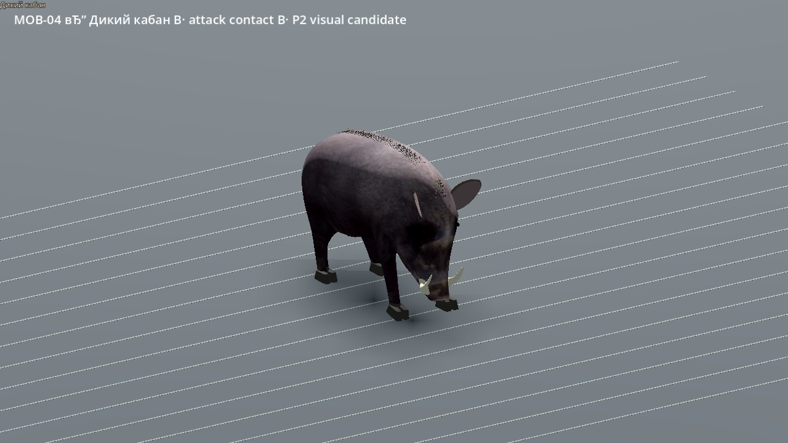
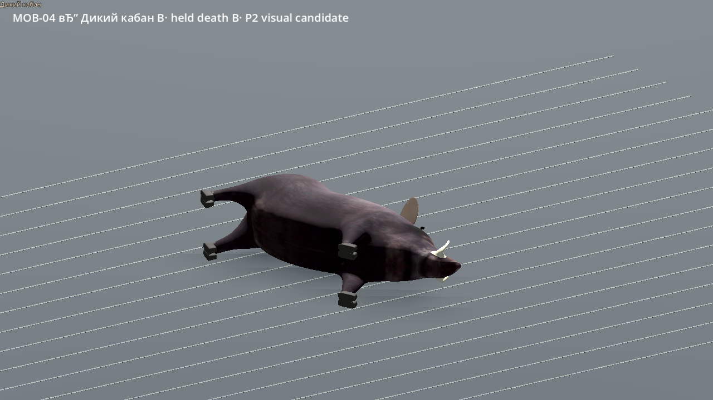
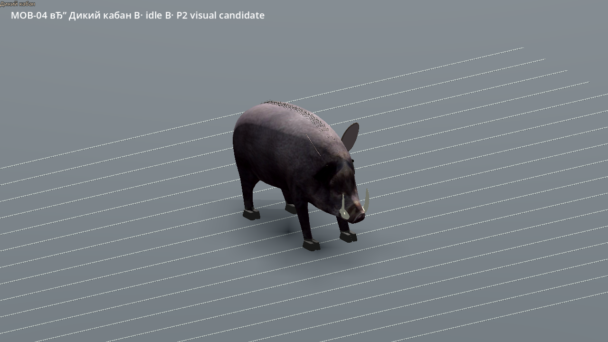
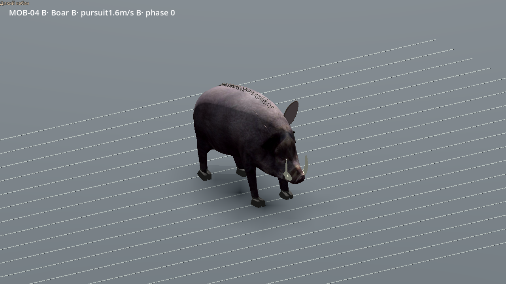
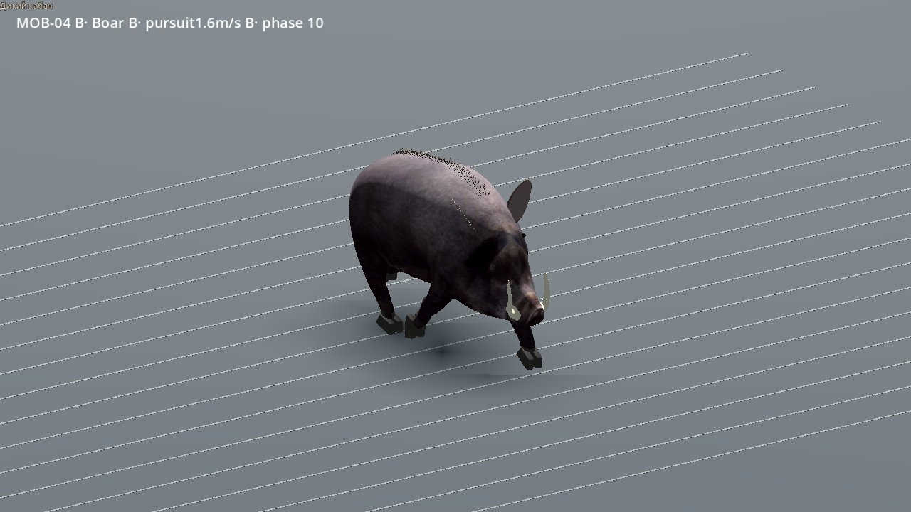
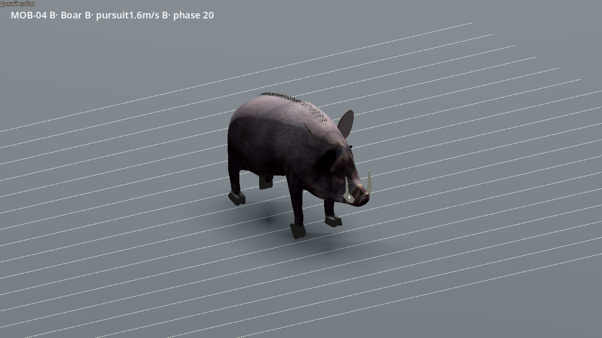
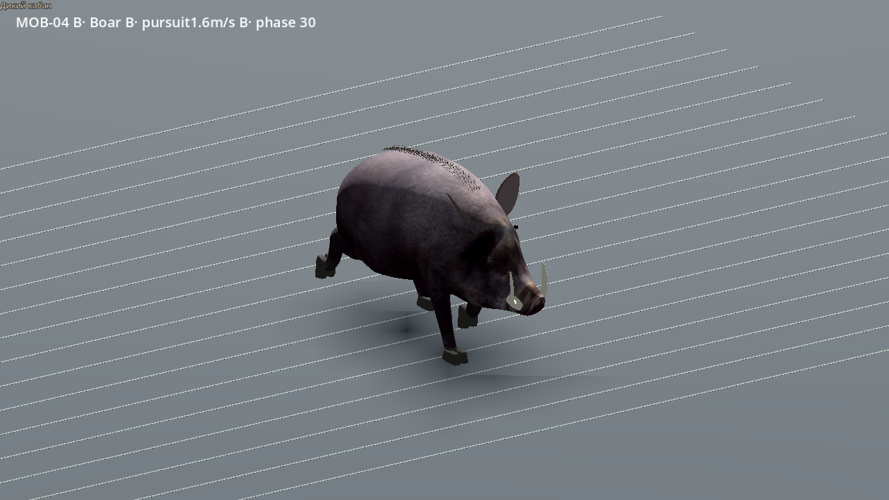
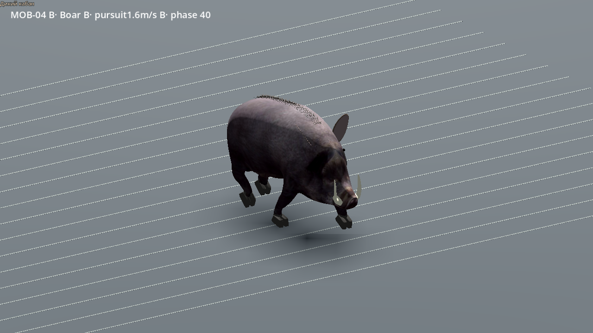
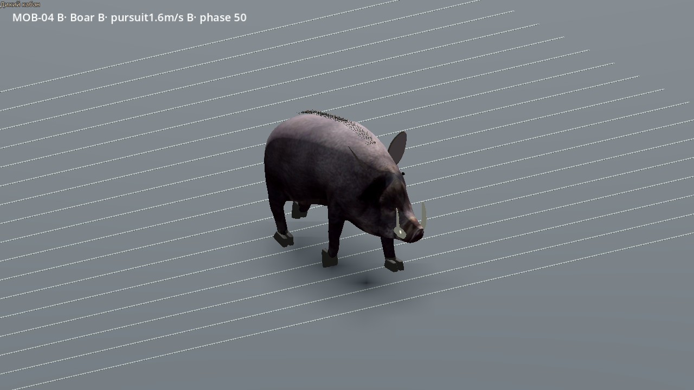

Native35/35; 1,6 м/с. Это отдельный кандидат: финальная художественная оценка и live pursuit ещё открыты. Исходный кабан без всадника, авторские щетина, копыта, уши и замыкание цикла. CC BY-SA4.0.








